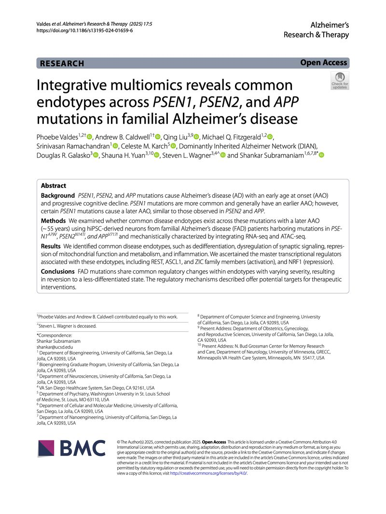

Hi, I'm Andrew.
I'm a Senior Research Scientist at UC San Diego integrating experimental biology with computational approaches to understand complex diseases. I work across the full spectrum of biomedical research—designing experiments, conducting wet lab work, and performing advanced computational analyses. This end-to-end perspective allows me to bridge traditional laboratory techniques with modern data science to extract meaningful biological insights.
My work has been published in Science Advances, Alzheimer's & Dementia, and Alzheimer's Research & Therapy, where I focus on uncovering new mechanisms in Alzheimer's Disease biogenesis.
I'm driven by the challenge of decoding the complexities of neurodevelopment and neurodegeneration, applying systems-level thinking with deep knowledge of human biology to advance our understanding of these critical health challenges and potentially inform future therapeutic strategies.